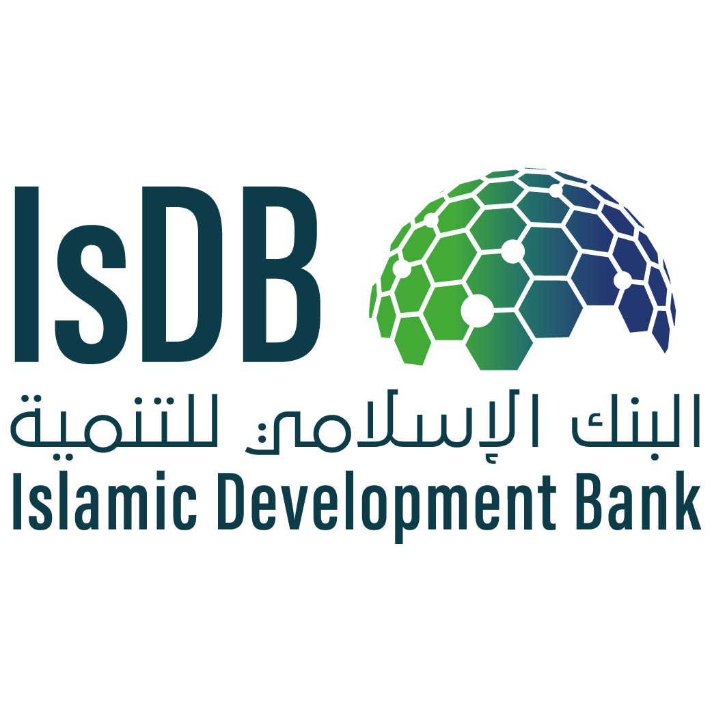

"Hi! Sharing world"
10th GLOBAL WAQF
CONFERENCE 2022
Recognised as the most notable expression of Islamic philanthropy, Waqf is the voluntary, permanent, and irrevocable dedication of a portion of one's wealth, in cash or kind, to Allah. Standing out as one of the greatest achievements of Islamic civilization, Waqf is a philanthropic foundation, with the mission of maximizing the value of endowments for the greater benefit of society. This year the conference will serve as a platform to establish clarity, explore the boundaries of new waqf developments, initiatives, and shed light on new thoughts, technologies, and regulations.
Please contact us per Email for any further questions about Global Waqf Conference 2022!
dr.nisaralig@gmail.comGlobal Waqf Conference 2022 Logo
The undermentioned Logo of Global Waqf Conference was designed on 29 Novemver by Dr.Nisar Ali for use at this site only.It is pertinent to mention that this is not the orignal Logo of GWC 2022.
See the past Global Waqf Conferences
Take a look at the last two GWC events which took place in...
-
2019
7th Global Waqf Conference
-
2020
8th Global Waqf Conference
Partner

- 